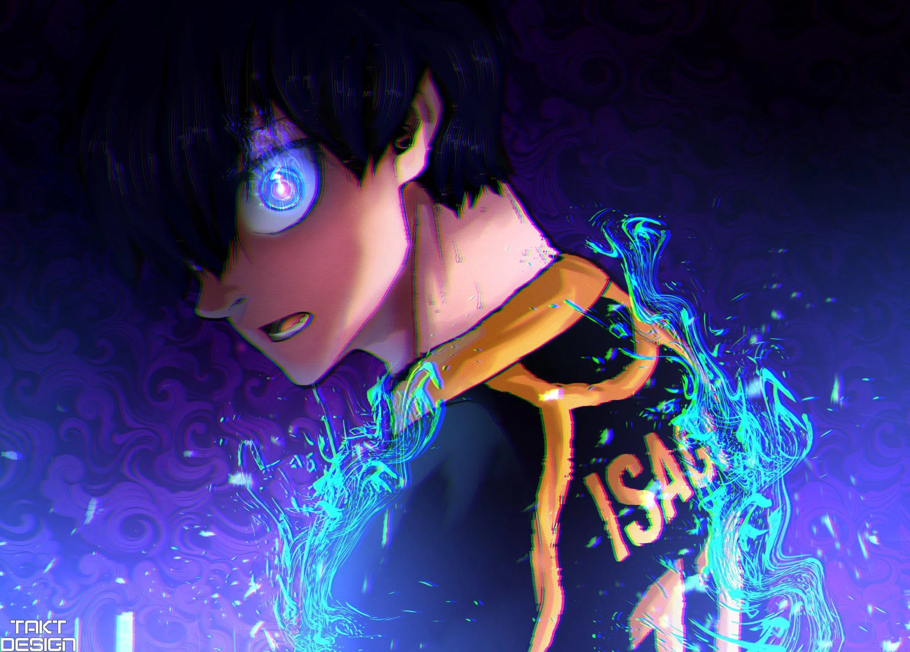
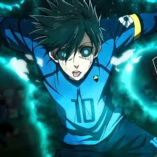
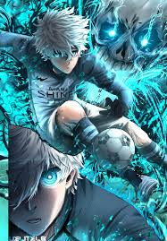

/>
Top 3 personaje
-
Yoichi Isagi – personajul principal, analitic și inteligent în teren.

-
Rin Itoshi – un atacant foarte talentat și rival al lui Isagi.

-
Nagi Seishiro – jucător creativ cu un stil imprevizibil.

| Personaj |
Poziție |
Stil de joc |
| Isagi |
Atacant |
Tactică și viziune |
| Rin |
Atacant |
Dominant și tehnic |
| Bachira |
Mijlocaș ofensiv |
Creativ și imprevizibil |